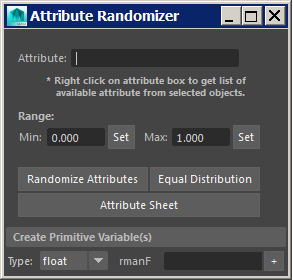

|
|
VERSION 2.2 |
•Add "Attribute Sheet Plus" button (a similar function to that of Maya's Attribute sheet but with more options like sort, filter object selection and more! - good for small batches) |
VERSION 2.1 |
•Add an option to be able and select all objects in the scene that have the specified attribute |
VERSION 2.0.1 |
•Minor float/int variable declaration change |
VERSION 2.0 |
•Script Name change; from Attribute Randomizer (sbAttrTbx) to Attributes Toolbox (sbAttrToolbox) •Option to rename attributes |
VERSION 1.3 |
•Minor error fixed (double declaration of a variable). •Added delete attribute in selected items. •Added decimal and whole number randomize buttons. •Fixed wrong math calculation for "Equal Distribution". |
VERSION 1.2 |
•Added option to create primitive variables on geometry shapes. •Added "equal distribution" option.  |
VERSION 1.1 |
•Fixed issue with function declaration (global proc). |
VERSION 1.0 |
•Useful when working with primvars. Right-click on the attribute field gives all relevant attributes of the current selection.
|